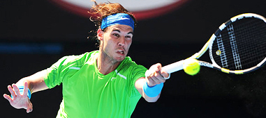
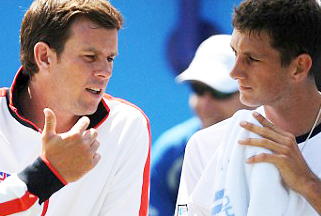
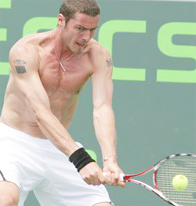

← Bài trước: In your mind’s eyes | 🏠 Mental Game Trang chủ | Bài tiếp: → John Newcombe The Two Minds
Tăng cường tự tin
Thư viện kiến thức quần vợt thống nhất — Cơ bản, Phân tích kỹ thuật, Thư viện tham khảo, và nhiều hơn nữa
Tăng cường tự tin
Bởi Allen Fox, Ph.D.

Một số người dường như sinh ra với mức độ tự tin cao hơn những người khác.
Dưới sự tự tin của chiến thắng là mức độ tự tin cơ bản của bạn. Đây là mức độ tự tin mà bạn được sinh ra hoặc được hình thành trong tuổi thơ.
Không ai biết chắc phần nào do di truyền và phần nào do trải nghiệm sớm trong việc phát triển mức độ tự tin cơ bản của chúng ta. Nhưng cho dù lý do gì, điều rõ ràng là chúng ta không được trang bị đều nhau.
Một số người may mắn sinh ra với mức độ tự tin cao hơn những người khác. Chúng ta tất cả đều trở nên tự tin hơn với mỗi chiến thắng, bất kể mức độ tự tin ban đầu của chúng ta. Nhưng những người có mức độ tự tin tự nhiên cao hơn dường như trải nghiệm sự tăng cường tự tin lớn hơn với mỗi chiến thắng và giảm xuống ít hơn với mỗi thất bại so với những người khác.
Làm thế nào để chúng ta học cách tăng cường tự tin? Bao quanh mình với những người tích cực luôn là một lợi thế, dù đó là trong quần vợt hay bất cứ lĩnh vực nào khác. Có một huấn luyện viên xây dựng bạn lên chắc chắn là một lợi thế lớn hơn so với một huấn luyện viên phá vỡ bạn.

Một huấn luyện viên có thể cải thiện mức độ tự tin của bạn đến một mức độ nào đó.
Nhưng những lời nói của huấn luyện viên nên thực tế và đáng tin cậy. Có lợi nhất là có một huấn luyện viên đánh giá được điểm mạnh của bạn trong khi không bỏ qua điểm yếu của bạn và vẫn tin vào năng lực cạnh tranh cơ bản của bạn.
Một huấn luyện viên có thể xây dựng tự tin của bạn bằng cách nói với bạn rằng bạn đang làm tốt khi bạn thực sự đang làm tốt và bằng cách xác định điểm yếu của bạn như cơ hội để cải thiện. Nếu được xử lý tốt, điều này có thể cải thiện mức độ tự tin của bạn đến một mức độ nào đó, nhưng không gần bằng mức độ do chiến thắng mang lại.
Huấn luyện viên nên tránh việc khuyên học viên của mình có thêm tự tin. Không ai có thể nói với bạn phải có nó. Bạn được sinh ra với một phần nào đó, có thể nhận được một phần nhỏ từ những người cố vấn tích cực, nhưng phần lớn bạn nhận được từ chiến thắng. Bạn không nhận được gì từ ai đó nói với bạn phải có thêm nó.
Hãy nhận ra rằng không có gì sai với bạn nếu bạn không tự tin vào việc thắng khi bước lên sân để thi đấu với những người tốt hơn bạn. Tự tin vào bản thân ngụ ý chắc chắn, và những người có lý trí đơn giản là không cảm thấy chắc chắn về việc đánh bại những người tốt hơn họ. Nguy cơ lớn nhất là nghĩ bạn có điểm yếu về tính cách nếu thiếu tự tin trước những người tốt hơn bạn.

Safin có thể thắng các giải Grand Slam mà không tin rằng anh có thể.
Điều đó có thể gây suy yếu. Và chúng ta đã thấy với Marat Safin trong bài viết đầu tiên, bạn vẫn có thể thắng mà không cần nó. (Nhấn vào đây.)
Vì vậy, không có gì đặc biệt bạn có thể làm để tạo ra tự tin vào bản thân, lựa chọn tốt nhất của bạn là bỏ qua vấn đề hoàn toàn. Tất cả những gì mọi người thực sự cần tin là chiến thắng là có thể.
Hãy để những tay vợt khác lo lắng về việc họ có đủ tự tin hay không. Tất cả những gì bạn cần là bước lên sân với thái độ hy vọng, kiểm soát cảm xúc, can đảm, và một bộ kỹ thuật đã luyện tập tốt, và bạn sẽ thắng được một phần lớn trận đấu.
Làm thế nào để bạn thoát khỏi một chuỗi thua? Khi mức độ tự tin của bạn xuống, có những bước bạn có thể thực hiện để đảo ngược chu kỳ. Bước đầu tiên là nhận ra tính chất chu kỳ của tự tin để giảm bớt căng thẳng liên quan.
Giống như một cỗ xe lăn, tự tin có những đỉnh và đáy. Giữ quan điểm rằng chỉ cần thời gian nó sẽ chuyển đổi. Điều này giúp chống lại nguy cơ trở nên thất vọng và cảm xúc tiêu cực, từ đó kéo dài sự đau khổ.
Bất kể bạn đang chơi kém đến mức nào vào lúc này, hãy nhận ra rằng bạn sẽ sớm thoát khỏi nó. Hãy nhận ra rằng nếu bạn đang có một chuỗi thắng và chơi rất tốt, điều này cũng sẽ kết thúc. Điều quan trọng là xem cả hai như một phần của các chu kỳ lớn hơn.

Bạn thực sự cải thiện bằng cách chỉ chơi với những người "tốt hơn" không?
Quá trình này tương tự như đối phó với các cơn hoảng loạn. Các cơn hoảng loạn cảm thấy tệ hại, nhưng không thực sự gây hại cho người bị ảnh hưởng về mặt vật lý, mặc dù nó dường như sẽ làm như vậy vào thời điểm đó.
Các cơn hoảng loạn sẽ tự động kết thúc vì lý do chưa được biết. Với quan điểm này, người ta thường có thể vượt qua chúng mà không kéo dài vấn đề bằng cách trở nên thêm căng thẳng và sợ hãi bởi các triệu chứng vật lý.
Tương tự, nếu bạn đang có một chuỗi thua, hãy nhận ra rằng nó cũng sẽ tự động chuyển đổi, mặc dù nó cảm thấy như thể nó sẽ không bao giờ kết thúc. Và nó sẽ làm như vậy sớm hơn nếu bạn không trở nên tiêu cực và quá lo lắng về nó.
Trên hết, hãy giữ thái độ hy vọng vì bạn không biết khi nào nó sẽ kết thúc, chỉ biết rằng nó sẽ, và giả định rằng trận đấu tiếp theo sẽ là sự khởi đầu của chuỗi thắng của bạn. Nếu nó không xảy ra, hãy làm giả định tương tự với trận đấu tiếp theo, và cứ như vậy cho đến khi nó xảy ra.

Những tay vợt như Vince Spadea và thậm chí là Andre Agassi đã xây dựng tự tin trong các giải đấu Challenger.
Bước thứ hai hữu ích là chơi với những đối thủ yếu hơn để có được một số chiến thắng. Vince Spadea đã cung cấp một ví dụ ở cấp độ chuyên nghiệp bằng cách xây dựng tự tin tại các giải đấu Challenger trước khi quay lại các sự kiện cấp cao của ATP. Andre Agassi cũng đã làm điều tương tự nhiều năm trước.
Bạn có thể làm điều này bất kể cấp độ của mình bằng cách chọn cẩn thận những đối thủ mà bạn có thể đánh bại. Tôi nói với mọi người rằng tôi đã học được cách thắng mỗi lần tôi chơi. Tôi làm điều này bằng cách không bao giờ chơi với bất kỳ ai có năng lực, và tôi chỉ hơi đùa thôi. Thực tế là, tôi không thích thua, và tôi cũng thực hiện các bước để tránh nó bằng cách lựa chọn đối thủ phù hợp.
Tôi tin rằng điều này là một huyền thoại rằng bạn có thể cải thiện trò chơi của mình tốt nhất bằng cách luôn chơi với những người tốt hơn bạn, mặc dù đây là một sự hiểu lầm phổ biến trong số các tay vợt và đặc biệt là các phụ huynh quần vợt. Tôi nghĩ rằng ngược lại mới là đúng.
Mặc dù vậy, chơi với một số người tốt hơn vẫn có ích. Nhưng khi bạn bị đánh bại quá nhiều lần, mức độ tự tin của bạn sẽ giảm, và bạn có thể phát triển tư duy phòng thủ, sợ hãi, tiêu cực.
Bỏ qua vấn đề tự tin, việc trò chơi của bạn có phát triển đúng đắn cũng là đáng nghi ngờ. Phần thưởng và hình phạt trên sân dạy bạn lựa chọn cú đánh phù hợp. Nếu trải nghiệm của bạn chủ yếu là đối mặt với những người tốt hơn bạn đáng kể, không gì có thể hoạt động. Điều này có nghĩa là lựa chọn cú đánh phù hợp có thể bị trừng phạt như nhau với lựa chọn cú đánh không phù hợp và bạn có thể không bao giờ học được sự khác biệt.
Bạn học về chiến lược những gì hoạt động và những gì không hoạt động từ kinh nghiệm đối mặt với nhiều loại người chơi ở nhiều cấp độ khác nhau. Nhưng bạn cần có thành công chiến lược bằng cách thắng trận đấu để phát triển hoặc tăng cường tự tin vào lựa chọn cú đánh phù hợp với trò chơi của bạn.
Đọc thêm từ Allen!
Hãy ghé thăm anh ấy tại www.allenfoxtennis.net

Thắng trận đấu tâm lý Dr. Allen Fox
Quần vợt là môn thể thao khó nhất về mặt tinh thần do bản chất cá nhân của nó khiến thắng và thua cảm thấy quan trọng hơn chúng thực sự là. Trong cuốn sách mới này, Allen giới thiệu các giải pháp đã được chứng minh của anh ấy đối với các vấn đề như choking, giảm căng thẳng, kết thúc trận đấu, và phát triển tự tin. Dựa trên một đời chơi và huấn luyện thành công ở cấp độ cao, đây là một cuốn sách bắt buộc cho tất cả các tay vợt cạnh tranh.
Nhấn vào đây để Đặt hàng.

Thắng có thể không phải là mọi thứ, nhưng Dr. Allen Fox chỉ ra rằng, nếu chúng ta trung thực với bản thân, thắng vẫn là điều đáng ưa thích hơn thua. Trong cuốn sách mới của anh ấy, The Winner's Mind, Allen trình bày một kế hoạch nguyên bản theo từng bước để thành công trong bất kỳ nỗ lực nào của đời sống, dựa trên quan sát cá nhân của anh ấy về sự nghiệp của cả các tay vợt quần vợt thế giới và doanh nhân thành công.
Điểm cuối cùng là ngay cả khi bạn không phải là một nhà vô địch sinh ra, và chỉ một phần trăm nhỏ chúng ta là như vậy, bạn vẫn có thể sử dụng các chiến lược thành công của nhà vô địch để nghiêng cân đối trong lợi thế của bạn. Viết với sự trung thực và hài hước khắc nghiệt, Fox trình bày các đặc điểm tâm lý chung của người chiến thắng trong thể thao và đời sống. Anh ấy giải thích vai trò quan trọng của trí tuệ hơn là cảm xúc. Anh ấy phân tích sự đấu tranh giữa tham vọng và sợ hãi và sự sợ hãi tiềm ẩn và phổ biến đối với thất bại mà làm suy yếu rất nhiều người.
Anh ấy sau đó nêu ra cách đối mặt và vượt qua những sợ hãi này trong cuộc sống và sự nghiệp của bạn, ngay cả khi chúng ban đầu là vô thức. Phải đọc từ một trong những nhà phân tích sáng tạo và sâu sắc nhất trong quần vợt hiện đại, và là một người Phục hưng trong đời sống. Nhấn vào đây để Đặt hàng.
Để mua cuốn sách này, bạn cũng có thể gửi séc trị giá $17.95 cho Allen Fox, 1120 Inverness Place, San Luis Obispo, CA. 93401. Giá bao gồm phí vận chuyển.

Allen Fox PhD là một tay vợt chuyên nghiệp cấp thế giới, một huấn luyện viên, một tâm lý học, và một trong những nhà phân tích sáng tạo và sâu sắc nhất trong quần vợt hiện đại. Một tay vợt hàng đầu của Mỹ từ những ngày vinh quang trước khi quần vợt mở, Fox đã chơi với nhiều huyền thoại, bao gồm Roy Emerson, Rod Laver, Stan Smith, và Arthur Ashe. Tại Pepperdine, anh ấy đã phát triển chương trình quần vợt nam thành một đối thủ hàng đầu cho các giải đấu quốc gia, và đã cung cấp cho Brad Gilbert những hiểu biết trở thành cơ sở cho "Winning Ugly". Cuốn sách của anh ấy Think to Win là một tác phẩm kinh điển hiện đại. Anh ấy cũng đã xuất hiện trong một loạt các video được ca ngợi, bao gồm Pro Secrets of Match Play và Allen Fox's Ultimate Tennis Lesson.
Nguồn: tennisplayer.net lưu trữ — Increasing Confidence.docx (Thư viện giảng dạy của John Yandell, 2002-2022). Được trích xuất và hiển thị dưới dạng HTML cho Tennis Future Lab.